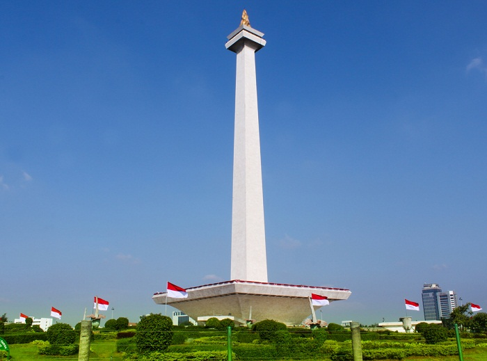

"Google Mobile Web Spesialist 2018"
"Google Mobile Web Spesialist 2018"

Monumen Nasional atau yang populer disingkat dengan Monas atau Tugu Monas adalah monumen peringatan setinggi 132 meter yang didirikan untuk mengenang perlawanan dan perjuangan rakyat Indonesia untuk merebut kemerdekaan dari pemerintahan kolonial Hindia Belanda.
- Alamat: Gambir, Kota Jakarta Pusat, Daerah Khusus Ibukota Jakarta
- Tinggi: 132 m
- Mulai dibangun: 17 Agustus 1961
- Jam buka:
- Tutup ⋅ Buka pukul 07.00
- Arsitek: Frederich Silaban, R.M. Soedarsono